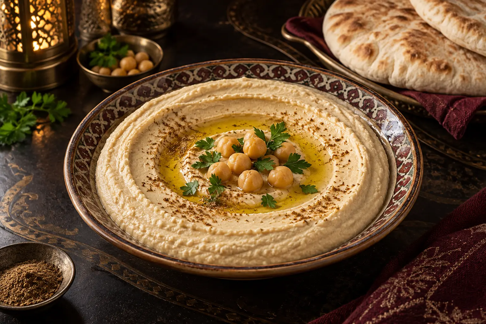

← Voltar para as receitas
Homus sírio tradicional: a receita original não leva alho
Cremoso, equilibrado e preparado com poucos ingredientes. Esta é a versão tradicional compartilhada pelo Syriana Centro Árabe.

PreparoMolho de 12 horas
CozimentoAté ficar bem macio
RendimentoCerca de 12 porções
O homus tradicional depende mais da qualidade dos ingredientes e da textura do grão-de-bico do que de uma lista extensa de temperos. Na receita do Syriana, o equilíbrio vem do tahine, do limão e do cominho.
Importante: o homus sírio original preparado pelo Syriana não leva alho. O alho aparece em algumas adaptações, mas não faz parte desta versão tradicional.
Ingredientes
- 500 g de grão-de-bico seco
- 100 ml de tahine
- 5 g de cominho
- Sal a gosto
- Limão a gosto
- Água para o molho e o cozimento
Modo de preparo
- Deixe de molho: cubra o grão-de-bico seco com bastante água e deixe de molho por no mínimo 12 horas.
- Lave e leve ao fogo: descarte a água do molho, lave bem o grão-de-bico e coloque-o em uma panela com água limpa. Leve ao fogo até a água começar a ferver.
- Adicione o bicarbonato: quando levantar fervura, acrescente uma colher de sopa de bicarbonato de sódio. Uma espuma branca começará a se formar na superfície; retire essa espuma com uma escumadeira sempre que necessário.
- Cozinhe até desmanchar: continue cozinhando até os grãos começarem a se abrir e ficarem extremamente macios, quase desmanchando.
- Escorra bem: passe o grão-de-bico por um coador, descarte toda a água e espere até que fique bem escorrido e sequinho.
- Bata com gelo: coloque o grão-de-bico no liquidificador, adicione cerca de cinco pedras grandes de gelo e comece a bater. Evite acrescentar gelo em excesso para o homus não ficar aguado.
- Tempere: acrescente o sal, o limão, o cominho e aproximadamente 50 ml de azeite de oliva. Continue batendo até obter um creme bem liso.
- Finalize com o tahine: quando o creme estiver bem batido, acrescente o tahine por último e bata por mais um pouco, somente até incorporar. Sirva em seguida.
O segredo da textura
O grão-de-bico precisa estar realmente macio. Se estiver firme, o homus ficará granulado. A água do próprio cozimento ajuda a ajustar a consistência sem esconder o sabor do grão-de-bico e do tahine.
Prefere provar pronto?
Conheça o homus e outros sabores sírios preparados pelo Syriana em Ponta Grossa.
Fazer pedidoReservar uma mesa